↑先欣賞拆光碟機的影片。
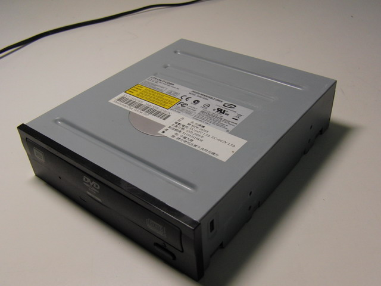
↑好好的一台光碟機。
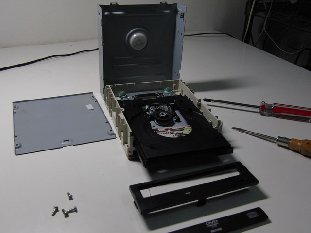
↑就這樣把它拆了。
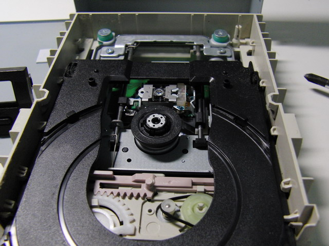
↑看一下，裡面有托盤、旋轉馬達、雷射讀寫頭等等。
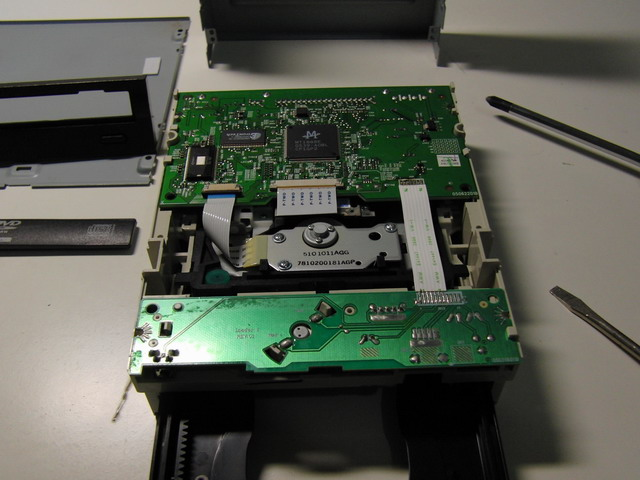
↑翻過來看背面，晶片與IC板。
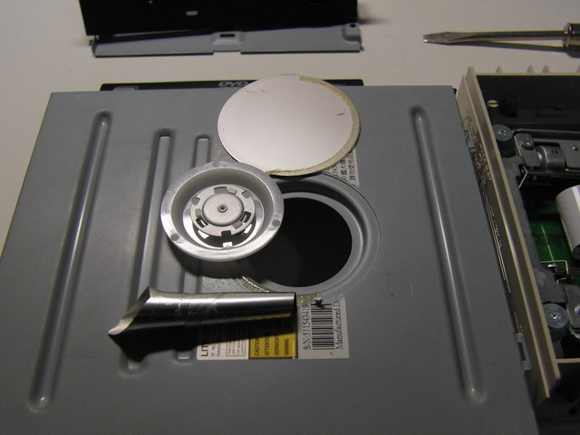
↑外殼頂部，拆開來發現裡面有一個塑膠圓片，很輕，不知道幹嘛用的。
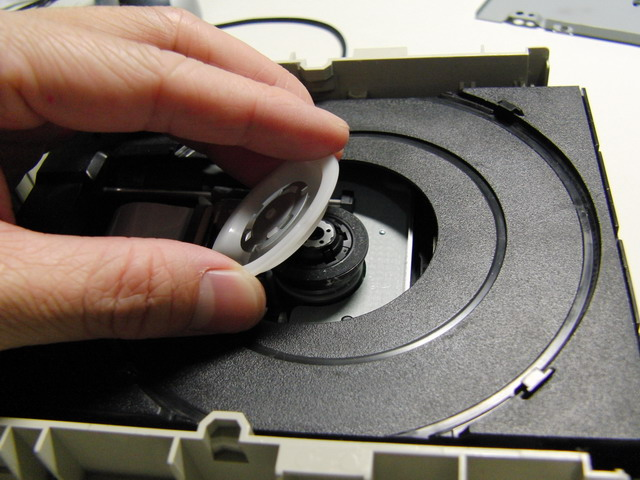
↑原來塑膠圓片裡有強力磁鐵，可以吸在旋轉馬達上，幫助固定光碟片。好聰明的設計啊！
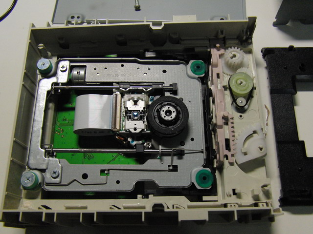
↑托盤拆掉，裡面看得更清楚了。
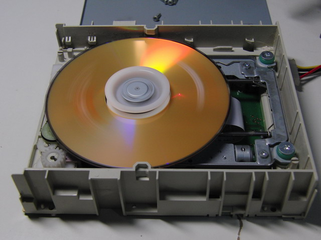
↑放張光碟，蓋上塑膠圓片上蓋，啟動馬達，還能正常運作喔！雷射光還會透出來呢！
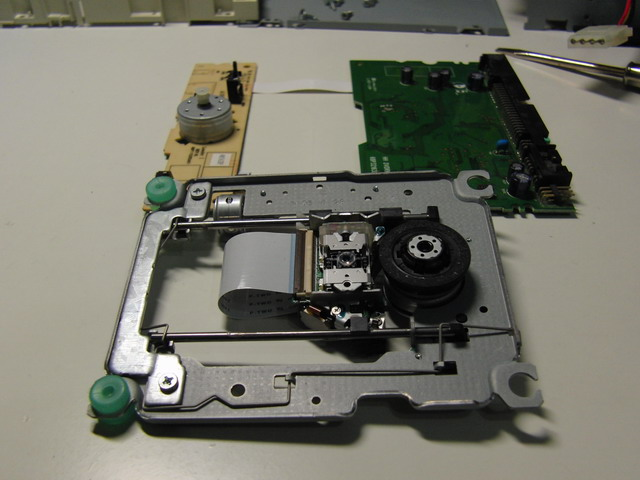
↑進一步把主體與塑膠殼分離。
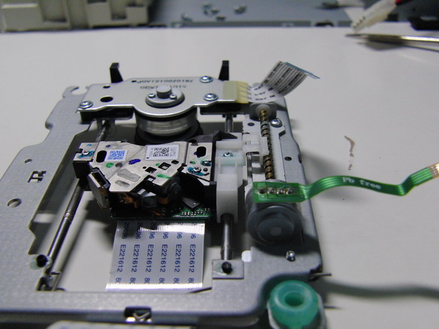
↑背面。仔細看右邊，那個螺旋桿轉動時，可以改變讀寫頭的位置喔！
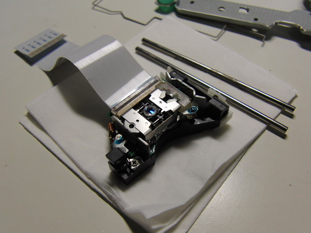
↑拆下來的讀寫頭。
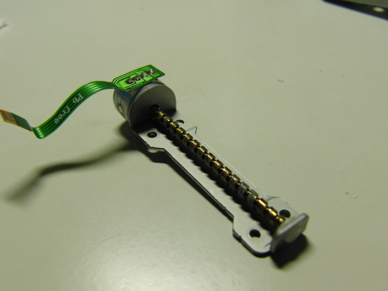
↑推動讀寫頭前進的螺旋馬達。
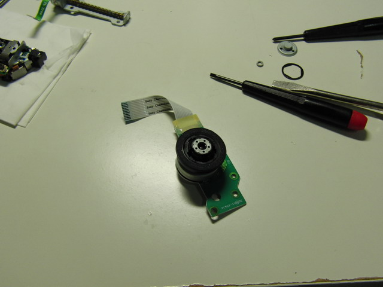
↑中間負責轉光碟片的馬達，影片(最上面)中有提到，搖一搖，有沙沙聲喔。
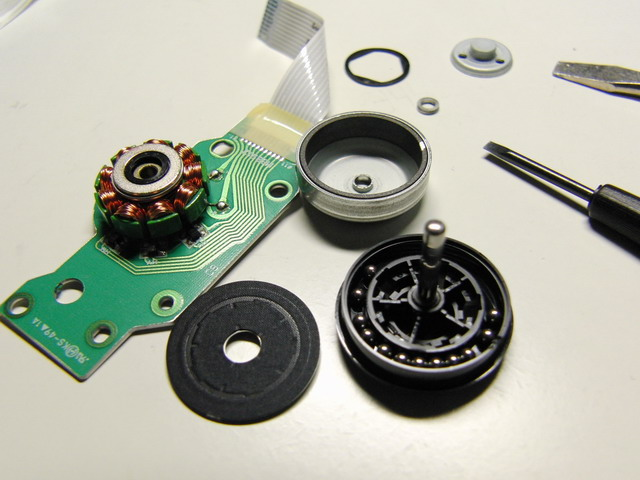
↑拆開來，除了看到馬達應有的線圈、強力磁鐵外，果然來有一些小鋼珠。
想一想，小鋼珠有什麼作用呢？(提示：轉動慣量)
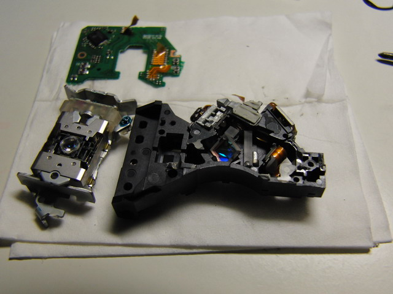
↑讀寫頭可以再拆開，左邊是最表層的透鏡，右邊是雷射與分光鏡等等。
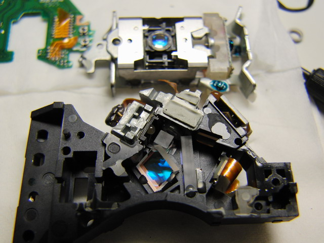
↑雷射與分光鏡特寫，你看的出哪裡是雷射嗎？
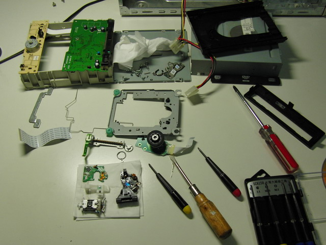
↑終於拆完了，來張大合照吧！